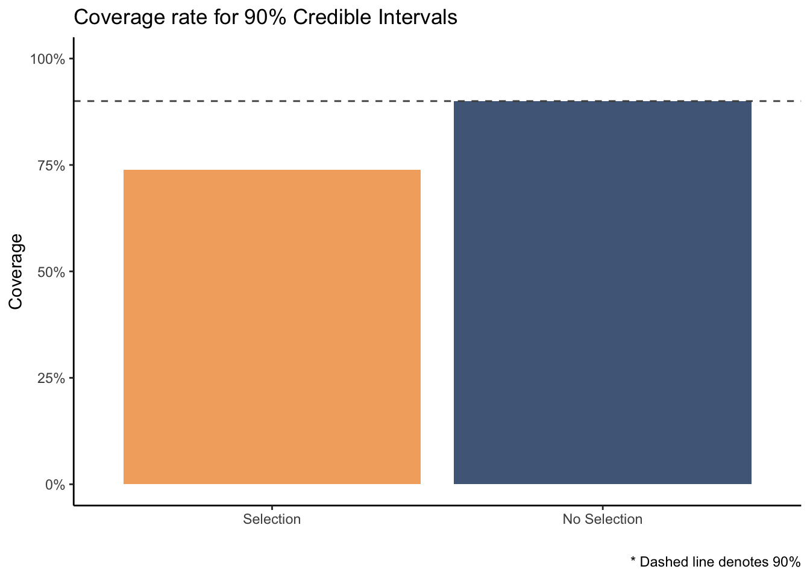
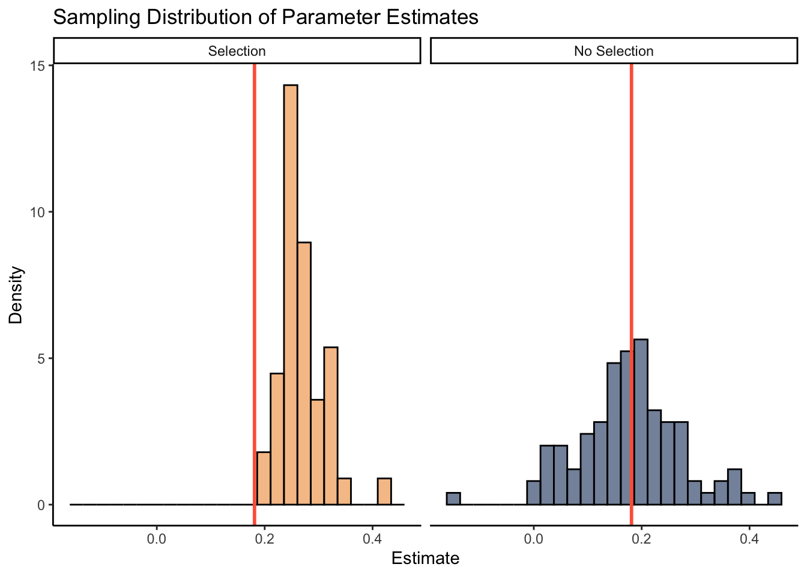

Over the last few months, a frequent topic of conversation with my lab mate Donny has been the issue of valid inference following model selection, or model selection bias. This problem has been recognized since at least 1963 and has been written about extensively since then. Some resources I have found both helpful and accessible in understanding model selection bias can be found here, here, and here. However, this issue is still pervasive among social and behavioral scientists 1, so I am writing a short post here in hopes of clarifying the ramifications of drawing inference after selecting a model.
What is model selection bias?
To understand model selection bias, it is helpful to understand what constitutes model selection.
Model selection occurs when a data-driven procedure is used to select variables, or the final model. This includes when statistical models are chosen based on things like minimizing cross-validation error, penalty-based criteria (e.g., AIC, LASSO, etc.) or stagewise selection, among others.
Model selection bias occurs when, after a model selection procedure, researchers proceed with inference “as usual” (i.e., as if the model were known a priori; Leeb & Pötscher (2005)).
The notion of model selection bias is nicely summarized in Berk et al. (2013),
Classical statistical theory grants validity of statistical tests and confidence intervals assuming a wall of separation between the selection of a model and the analysis of the data being modeled. In practice, this separation rarely exists, and more often a model is “found” by a data-driven selection process. As a consequence inferential guarantees derived from classical theory are invalidated. Among model selection methods that are problematic for classical inference, variable selection stands out because it is regularly taught, commonly practiced and highly researched as a technology. (p. 802)
In psychology, perhaps the most common example of model selection bias occurs with linear models. Say you estimate a multiple regression and after examining the predictors and their associated p-values, you decide to drop those with “non-significant” p-values according to some \(\alpha\) level. You then refit the model using only the “significant” predictors and proceed with inference. This procedure is a form of model selection and the resulting inference will suffer from model selection bias.
Another common example occurs with regularization, such as using lasso or ridge penalties. These methods are often used due to the thought that they guard against spurious relations and overfitting. However, these forms of regularization bias estimates toward zero, and this presents issues for computing valid p-values and confidence intervals.
Why does model selection bias matter?
Although students are commonly taught to remove “insignificant” predictors or use information criteria to find the most parsimonious model, model selection bias distorts the sampling distribution of parameter estimates and results in more Type I errors (Berk et al., 2013; Leeb & Pötscher, 2005).
Why does this occur?
An assumption behind the majority of inferential procedures is that the model is fixed, but model selection makes the model itself random. Inferential procedures typically do not account for this stochastic aspect. Using confidence intervals, let’s take a second to think about why model selection introduces randomness.
Wikipedia defines a 90% confidence interval in terms of sampling by stating
Were this procedure to be repeated on numerous samples, the fraction of calculated confidence intervals (which would differ for each sample) that encompass the true population parameter would tend toward 90%.”
What I would like to emphasize here is that that valid confidence intervals have a long run guarantee of covering the true population parameter (approximately) 90 out of 100 times, and this guarantee is based on carrying out the same procedure repeatedly. In this context, procedure refers to an estimation procedure and implies that the statistical model used for inference does not change from sample to sample.
Now, suppose we have collected some data and we have some candidate set of predictors. We then pick a subset of these predictors according to some model selection procedure and estimate a model with this subset. The end result is an estimation procedure that is conditional on the selected variables.
If we do this repeatedly — collect some new data, select a model, and fit it with the selected predictors — there is no guarantee that the estimation procedure will have the same predictors each time 2. It is this randomness introduced by model selection that invalidates the properties of classical inference.
Small simulation study
I would like to illustrate the effect of model selection on inference with a recent project I’ve been working on.
In psychology, network researchers are often interested in estimating the conditional (in)dependence structure between a set of variables, say PTSD symptoms, using partial correlation networks, or Gaussian graphical models. Typically this involves a data-driven model selection stage where partial correlations are set to zero either through a hypothesis test or some form of regularization, and then parameters are estimated. As previously mentioned, this can have a serious effect on inference. To show this effect, I will check the coverage rates and sampling distributions for a parameter of interest with and without selecting a model. Namely, I use the sum of partial correlations, or “edges”, for a given variable (i.e., “expected influence”).
To do so, I used the R package BGGM (Williams & Mulder, 2019) 3 to estimate networks with and without a model selection stage. This package estimates networks under a Bayesian framework so credible intervals were computed instead of confidence intervals. Although credible intervals have a different interpretation than confidence intervals 4, their coverage properties remain the same 5.
The simulation steps went as follows:
- Randomly sample observations from a multivariate normal distribution
- Estimate the partial correlation network
- If performing model selection, set “insignificant” partial correlations to zero
- Compute expected influence from the posterior distributions of “significant” partial correlations
- Compute a credible interval for the expected influence
- Check whether the interval covered the true value for expected influence
Note, to clearly show the distorted sampling distribution, I kept track of the largest single partial correlation included in the expected influence calculation. The code I used for this simulation can be found at the bottom of this post.
Coverage
After running the simulations, taking the means of covered_condit and covered_full yields the proportion of times that the credible interval covered the true parameter value when a model was selected and when it was not.
It is clear to see from this plot that when a model is not selected, the coverage rate is just about what we would expect — approximately 90 in every 100 credible intervals contained the true value for expected influence. But, when the model was selected prior to computing this interval, the true value was covered much less frequently. Only about 70 in 100 times!
Sampling Distribution
Recall that model selection also distorts the sampling distribution of parameters. In the simulations, I kept track of the partial correlation between variables 1 and 6. On each simulation trial, I simply took the mean of the posterior distribution for this parameter. While we would expect to see the means normally distributed around the true value (red line), the distribution is truncated when a model is selected 6. This results in overconfident inferences about the population value. Also notice that parameters estimated after model selection are biased towards large effects. This makes sense as larger effects are more likely to be “significant”.

The simulations and plots are simple, but they convey a powerful idea. Model selection distorts inferential properties such as coverage rates and sampling distributions.
Discussion
I’d like to emphasize that what I have briefly discussed in this post should not be confused with uncertainty in the model selection process 7, but rather that drawing valid post-model-selection inference is (almost) impossible 8.
As mentioned above, researchers often estimate parameters after selecting parameters, for example, expected influence. However, as we saw, this invalidates inferential procedures. A simple remedy would be to simply forgo the model selection process and estimate this parameter with the full model. Inference can then be conducted on the parameters of interest. If one must select a model, a straightforward solution is to perform data-splitting. That is, split your data into two parts, use one part for model selection, and use the other for inference. In fact, according to Cosma Shalizi, “Sample splitting is a simple, radical, almost a-theoretical way to solve the problem of post-selection inference…”.
Moreover, it may be tempting to think that because Bayesian inference is conditional on the data, issues with post-selection inference does not apply. This is not so (as shown in the plots above). Model selection with Bayesian methods leads to a selective posterior due to a truncated likelihood (Panigrahi et al., 2020; Panigrahi & Taylor, 2017).
I’d like to conclude with a nice cautionary quote
We do not discuss statistical inference…(e.g., looking at p-values associated with each predictor). If you do wish to look at the statistical significance of the predictors, beware that any procedure involving selecting predictors first will invalidate the assumptions behind the p-values. The [data-driven] procedures we recommend for selecting predictors are helpful when the model is used for [prediction]; they are not helpful if you wish to study the effect of any predictor (Hyndman & Athanasopoulos, 2018, p. 168)
#==========
# Set up
#==========
set.seed(24)
# number of variables
p <- 10
# number of (partial) cors
len_out <- p * (p - 1) / 2
# values for cors
sample_space <- seq(0.1, 0.4, by = 0.001)
rhos <- sample(sample_space, size = len_out, replace = TRUE)
# covariance matrix
S <- matrix(1, p, p)
S[lower.tri(S)] <- rhos
S[upper.tri(S)] <- t(S)[upper.tri(S)]
# partial cor matrix
true_pcors <- -cov2cor(solve(S))
# true expected influence
true_ei <- sum(true_pcors[1, -1])
# [1] 0.7456753
# true partial cor between 1 and 6
true_pcors[1, 6]
# [1] 0.1811494
# sample size for each trial
n <- 100
# number of trials
niter <- 1500
#============================
# Conditional selection
#============================
# containers
covered_condit <- mean_condit_ei <- rep(NA, niter)
for (iter in 1:niter) {
# sample data and fit GGM
Y <- MASS::mvrnorm(n, rep(0, p), S)
fit <- estimate(Y, iter = 1000, progress = FALSE)
sel <- select(fit)
# if none are selected move on to next iteration
if (all(sel$adj[1, ] == 0)) {
next
}
# select "significant" nodes
selected_pcors <- array(NA, dim = dim(sel$object$post_samp$pcors))
selected_pcors[] <- apply(sel$object$post_samp$pcors, 3, function(x) sel$adj * x)
# true value of sum for selected nodes
true_conditional <- sum(true_pcors[1, ] * sel$adj[1, ])
# compute expected influence for selected nodes
ei <- colSums(selected_pcors[1,,])
# compute 90% credible interval
cri <- quantile(ei, probs = c(0.05, 0.95) )
# check if true sum is covered in credible interval
covered_condit[iter] <- ifelse(cri[1] < true_conditional &
cri[2] > true_conditional, 1, 0)
# keep track of particular relationship to plot sampling distribution
if (sel$adj[1, 6] == 1) {
mean_condit_ei[iter] <- mean(selected_pcors[1, 6, ])
}
}
#============================
# Unconditional selection
#============================
# containers
covered_full <- mean_full_ei <- rep(NA, niter)
# full model, no selection
for (iter in 1:niter){
Y <- MASS::mvrnorm(n, rep(0, p), S)
fit <- estimate(Y, iter = 1000, progress = FALSE)
ei <- colSums(fit$post_samp$pcors[1,,])
cri <- quantile(ei, probs = c(0.05, 0.95) )
mean_full_ei[iter] <- mean(fit$post_samp$pcors[1, 6, ])
covered_full[iter] <- ifelse(cri[1] < true_ei &
true_ei < cri[2], 1, 0)
}Acknowledgments
I would like to thank Donny Williams for motivating me to write this blog post and providing tons of helpful feedback.
References
Berk, R., Brown, L., Buja, A., Zhang, K., & Zhao, L. (2013). Valid post-selection inference. Annals of Statistics, 41(2), 802–837. https://doi.org/10.1214/12-AOS1077
Hyndman, R. J., & Athanasopoulos, G. (2018). Forecasting: Principles and practice (Second, p. 168). OTexts.
Leeb, H., & Pötscher, B. M. (2005). Model Selection and Inference: Facts and Fiction. Econometric Theory, 21(1), 21–59.
Panigrahi, S., & Taylor, J. (2017). Scalable methods for Bayesian selective inference. arXiv:1703.06176 [Stat]. https://arxiv.org/abs/1703.06176
Panigrahi, S., Taylor, J., & Weinstein, A. (2020). Integrative Methods for Post-Selection Inference Under Convex Constraints. arXiv:1605.08824 [Stat]. https://arxiv.org/abs/1605.08824
Williams, D. R., & Mulder, J. (2019). Bayesian Hypothesis Testing for Gaussian Graphical Models: Conditional Independence and Order Constraints [Preprint]. PsyArXiv. https://doi.org/10.31234/osf.io/ypxd8
Footnotes
Other fields as well but I’m in psychology so that is my focus↩︎
One could argue that this is not an issue with a consistent model selector or large enough sample sizes, but see Leeb & Pötscher (2005)↩︎
If you have any interest in network models at all I highly suggest checking out the BGGM package! It offers a variety of flexible methods for both exploratory and confirmatory analyses plus it now handles ordinal data and VAR models↩︎
A 90% credible interval can literally be interpreted as a 90% probability that the true parameter value is covered, given the data↩︎
“frequentist properties of Bayesian methods” is a good google search if you’re bored↩︎
There are methods to correct this truncation, but this is still an active area of research↩︎
To account for uncertainty in model selection some propose model averaging↩︎
There is a growing body of literature on “undoing” model selection bias, but it is not yet a mature body of literature↩︎